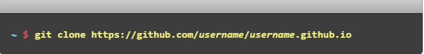
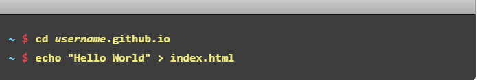
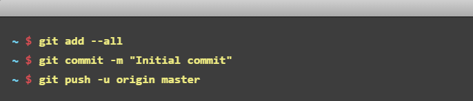
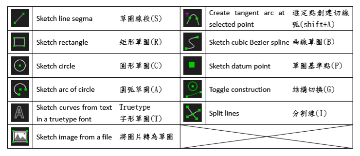

weeks <<
Previous Next >> week6-9
week1-5
week1
使用github 建立網站 https://pages.github.com/
藉由編輯、推送、提交，可將網頁編輯內容儲存至遠端
根據使用的終端不同而有兩種推送方式
終端
選擇你要放置倉儲的資料夾並將倉儲克隆至資料夾內

輸入項目

提交

免費H5模板資源網站
1.HTML5 UP
2.Start Bootstrap
3.Template.co
4.Free HTML5
5.Colorlib
week2
建立倉儲之步驟
1.登錄github帳號，同時創建一個新的倉儲cad2019
2.進入cad2019的github頁面並同時將cad2019之分支改為master分支
3.將新的倉儲git clone 至隨身碟裡
4.用黑窗進入隨身碟裡的倉儲並且將這串指令輸入
git submodule add https://github.com/mdescourse/cmsimde.git cmsimde
這串指令可將遠端網站架構克隆至隨身碟裡
5.因在舊版的可攜系統中無此模組, 執行 CMSiMDE 之前必須透過
python -m pip install flask_cors
安裝，以利近端開啟
6.在URL列輸入https://localhsot:9443即可開啟近端
week3
solve編譯
1.先將目錄切換至tmp
cd tmp
2.進入solvespace
cd espace
3.進入extlib
cd extlib
4.進入 libpng
cd libpng
5.製造build
mkdir build
6.將路徑切換至build
cd build
7.輸入
cmake .. -G "MinGW Makefiles" -DCMAKE_BUILD_TYPE=Release
8.再輸入
mingw32-make
9.從這裡要將路徑切換至solvespace 原始碼
cd ..*3
10.製造build
mkdir build
11.將路徑切換至build
cd build
12.輸入
cmake .. -G "MinGW Makefiles" -DCMAKE_BUILD_TYPE=Release
13.再輸入
mingw32-make
week4
slovespace 手冊研讀http://solvespace.com/index.pl
week5
使用solvespace 繪製圖案
快捷鍵

weeks <<
Previous Next >> week6-9